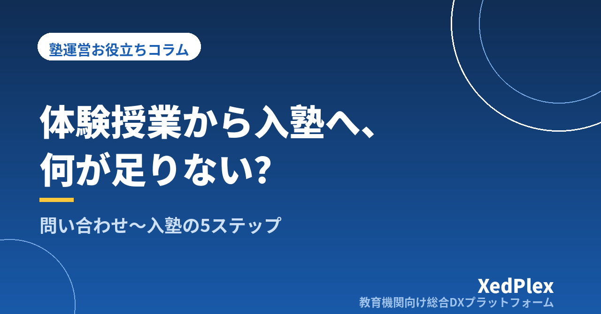

体験授業から入塾につながらない塾の共通点｜問い合わせから入塾手続きまでを型にする5ステップ

問い合わせの電話は来る。体験授業にも来てくれる。生徒の反応も悪くなかった。それなのに「家族と相談してみます」のまま連絡が途絶えてしまう──個人塾・小規模塾の塾長から、よく聞く話です。
体験授業の内容が悪かったのだろうかと授業を作り直してみても、結果があまり変わらないことがあります。というのも、入塾が決まるかどうかは体験授業の90分だけで決まっているわけではなく、最初の問い合わせから入塾手続きが終わるまでの一連の流れ全体で決まっているからです。そして小さな塾ほど、この流れが塾長の頭の中にしかなく、忙しい週にはどこかが抜け落ちてしまいます。
この記事では、体験授業が入塾につながりにくくなる原因を整理したうえで、問い合わせから入塾手続きまでを「型」にする5ステップと、記録の残し方を実務目線でまとめます。
体験授業が入塾につながらない3つの「空白」
授業の質そのものより先に見直したいのが、対応の流れに生まれる空白です。よくあるのは次の3つです。
空白1：問い合わせから体験までが空いている
保護者が塾を探すとき、多くは同時に2〜3か所を候補にしています。返信が翌々日になったり、日程調整が何往復もかかったりすると、その間に別の塾で話が進みます。返信と日程提示の速さが、そのまま「対応の丁寧さ」の印象になっているということです。
空白2：体験当日に保護者と話す時間がない
体験授業は生徒が受けますが、入塾を決めるのは多くの場合、保護者です。授業が終わって「どうでしたか？」と生徒に聞いて解散、では保護者は判断材料を持ち帰れません。とくに料金・通塾の曜日・振替の扱い・成績の報告方法といった運営面の疑問が残ったままだと、決断は先送りされます。
空白3：体験後のフォローが「連絡待ち」になっている
「ご検討のうえご連絡ください」で終わってしまうと、保護者側に「断りの電話を入れる」という心理的な負担が生まれ、そのまま自然消滅しやすくなります。塾側からもう一度、体験の内容を踏まえた具体的な提案を届けるだけで、この空白は埋まります。忙しさで数日経ってしまうのがいちばんもったいないパターンです。
直近の体験生3〜5名について、「問い合わせを受けた日」「体験を実施した日」「こちらから最後に連絡した日」を書き出してみてください。日付の間隔が空いているところが、そのまま今の塾のボトルネックです。
問い合わせから入塾までを5つのステップに分解する
空白を埋めるには、流れを工程に分け、それぞれに「誰が・いつまでに・何をするか」を決めておくのが確実です。小規模塾なら、次の5ステップで十分に回ります。
| ステップ | 目安の時間 | ゴール |
|---|---|---|
| ① 問い合わせ受付 | 受けた当日中 | 体験日の候補を2〜3日提示する |
| ② 体験前ヒアリング | 体験の3日前まで | 困りごと・通塾希望・成績状況を把握する |
| ③ 体験当日 | 当日 | 生徒の手応え＋保護者への説明を同日に済ませる |
| ④ 体験後フォロー | 体験から3日以内 | 体験を踏まえた提案と、返事の期限の共有 |
| ⑤ 入塾手続き | 返事から1週間以内 | 書類・初回請求・連絡手段の登録を一度に完了 |
大事なのは、各ステップに期限を数字で入れておくことです。「なるべく早く」では、忙しい週に必ず後回しになります。「当日中」「3日以内」と決めておけば、講師に任せるときも判断に迷いません。
ステップ別のポイントと、そのまま使える型
① 問い合わせ受付：窓口を1つにして、受付メモを固定する
電話・ホームページのフォーム・LINE・紹介など、問い合わせの入口はいくつあっても構いませんが、受けた内容を書き留める場所は1か所に統一します。塾長の手帳、講師のメモ、スマホの履歴に散らばると、折り返しの抜けが起きます。受付時に聞く項目は次の6つに固定しておくと、後の工程がすべて楽になります。
- 生徒氏名・学年・在籍学校
- 保護者氏名・連絡先（電話／メール／LINEのどれが繋がりやすいか）
- 相談したいこと（成績・受験・宿題の習慣など）
- 希望の曜日・時間帯
- 塾を知ったきっかけ（紹介・検索・チラシ・看板）
- 他塾も検討中かどうか
「知ったきっかけ」は、後から募集活動を見直すときの貴重な材料になります。連絡手段の使い分けについては、保護者連絡の手段の整理もあわせてご覧ください。
② 体験前ヒアリング：体験を「その子向け」にする
体験授業が印象に残るかどうかは、内容がその生徒の困りごとに合っているかで大きく変わります。とはいえ、事前に長い面談をする必要はありません。受付時のメモに加えて、直近のテストの点数と、いちばんつまずいている単元が分かれば十分です。電話や連絡アプリで「体験の内容を合わせたいので、直近のテストの結果が分かれば教えてください」と一言添えるだけで、当日の密度が変わります。
③ 体験当日：生徒の授業と保護者への説明をセットにする
体験当日は、授業のあとに保護者と話す時間を15分でいいので確保します。話す内容は毎回同じ4点に固定しておくと、準備の負担がなくなります。
| 説明する項目 | 伝える内容の例 |
|---|---|
| 今日の様子 | 取り組めた点、つまずいた単元、集中できていた時間帯 |
| これからの方針 | まず何から手をつけるか、どのくらいの期間で何を目指すか |
| 通い方と料金 | 曜日・コマ数・月謝・教材費・欠席時の扱い |
| ふだんの連絡 | 入退室の通知、報告のタイミング、面談の頻度 |
とくに「欠席したときどうなるか」と「ふだんどう連絡が来るか」は、保護者が気にしているのに自分からは聞きにくい項目です。こちらから先に説明しておくと、比較検討の場面で効いてきます。欠席・振替のルールづくりはこちらの記事で詳しく整理しています。
④ 体験後フォロー：3日以内に、記録に基づいて連絡する
「ご検討ください」で終わらせず、体験から3日以内にこちらから連絡します。ポイントは、営業的な催促ではなく体験の記録に基づいた具体的な提案にすることです。文面の型は次のとおりです。
- 体験参加へのお礼
- 当日の具体的な様子（「◯◯の単元で、途中式を書く手が止まる場面がありました」）
- 入塾した場合の最初の3か月の進め方
- 返事の期限と、質問の受け口（「今週いっぱいを目安に、ご不明点があればお気軽にご連絡ください」）
返事の期限をこちらから示すのは、急かすためではありません。期限がないと保護者も判断を保留し続けることになり、結果として「なんとなく流れる」状態を生むからです。断られた場合も、理由をひと言でも聞ければ次に活かせます。
⑤ 入塾手続き：1回で終わらせる準備をしておく
「入ります」と言われてから、申込書を探し、月謝規定を印刷し、口座振替の用紙を取り寄せ……となると、手続きが数週間に延びます。その間に気持ちが冷めてしまうこともあります。入塾セットとして、次のものを常に手元に揃えておきましょう。
- 入塾申込書（生徒情報・緊急連絡先・写真掲載の可否まで含める）
- 月謝規定・利用規約（休塾・退塾の申し出期限を明記）
- 口座振替またはお支払い方法の案内
- 連絡手段の登録案内（通知を受け取る保護者の登録）
- 初回請求の内容（入塾金・初月月謝の日割り・教材費）
開業時に決め漏れやすい事務まわりは個人塾の開業で見落としがちな「事務まわり」の準備リストに、初回請求の考え方は請求書発行を自動化する手順にまとめています。
「体験対応表」を1枚作る
5ステップを決めても、対応中の生徒が3人4人と重なると、頭の中では管理しきれません。エクセルでもノートでも構わないので、次の項目を並べた1枚の表を作り、体験の話が出たらすぐ1行足す運用にします。
| 列 | 記入例 |
|---|---|
| 問い合わせ日 | 9/2 |
| 生徒名・学年 | ◯◯さん・中2 |
| きっかけ | 在塾生の紹介 |
| 体験予定日 | 9/6（土）17:00 |
| 体験実施 | 済 |
| フォロー連絡日 | 9/8 |
| 結果 | 入塾／検討中／見送り |
| 見送り理由 | 曜日が合わなかった |
この表の効果は2つあります。ひとつは抜け漏れ防止。「体験実施」に済がついていてフォロー連絡日が空欄の行が、今日やるべき仕事です。もうひとつは振り返りの材料になること。数か月分たまると、「見送り理由の多くが曜日」といった傾向が見え、コマの設定など打ち手が具体的になります。
なお、この表には生徒・保護者の個人情報が含まれます。共有ファイルの置き場所やアクセスできる人の範囲は、生徒の個人情報管理の基本を参考に整理しておいてください。
入塾後の最初の1か月まで「型」に含める
入塾は着地点ではなく、通い続けてもらう期間の入口です。体験時に伝えた方針が、入塾後の指導や連絡につながっていないと、保護者は「話が違う」と感じます。最初の1か月にやることも、あらかじめ決めておきましょう。
- 初回授業の日に、指導方針を書面かメッセージで改めて共有する（体験時に話した内容の再確認）
- 2週目に一度、様子を短く報告する（数行で構いません）
- 1か月後に、面談または報告の機会を持つ
この3つがあるだけで、「入ってみたけれど様子が分からない」という不安がほぼ消えます。保護者との接点の設計は退塾を防ぐ保護者コミュニケーションの仕組み、面談の準備は保護者面談の準備を1時間で終わらせる方法で詳しく扱っています。
まとめ
体験授業が入塾につながらないとき、原因は授業そのものよりも、問い合わせから入塾手続きまでの流れに空いた「空白」にあることが少なくありません。返信の速さ、保護者への説明、体験後3日以内のフォロー、そして手続きの手際。どれも特別な仕掛けではなく、順番と期限を決めておくだけで実行できることばかりです。
まずは、直近の体験生3名分の日付を書き出し、5ステップのうちどこで止まっているかを確かめるところから始めてみてください。そして、対応表を1枚作って次の問い合わせから運用してみる。それだけで、忙しい週でも抜けにくい仕組みになります。
この記事を書いた運営より
私たちは、個人経営・小規模の学習塾向けに、生徒管理・QRコードでの入退室記録・月次請求・保護者へのLINE/メール通知・AIによる学習支援までをひとつにまとめた教育機関向け総合DXプラットフォーム「XedPlex（ゼドプレックス）」を開発・提供しています。初期費用は0円、料金は生徒1名あたり月額300円（税込）から。生徒50名の塾なら月15,000円（税込）です。全国8つの教室で導入されており、導入塾には紹介ホームページの無料作成も行っています。機能の詳細説明はこちら。
XedPlexの詳細を見る